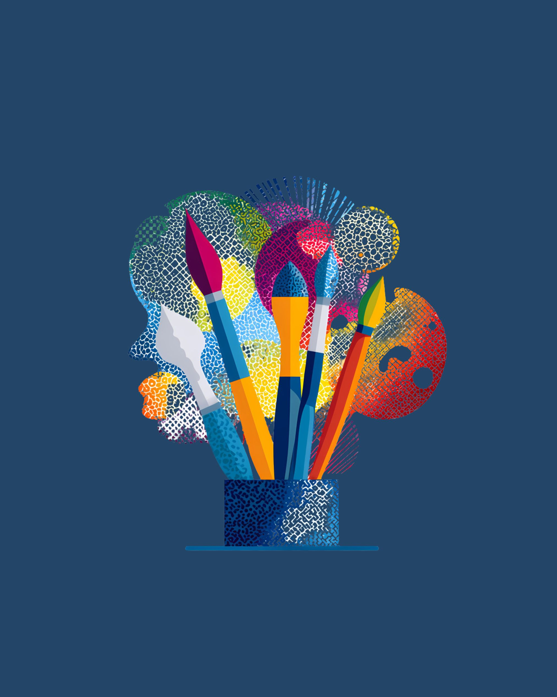
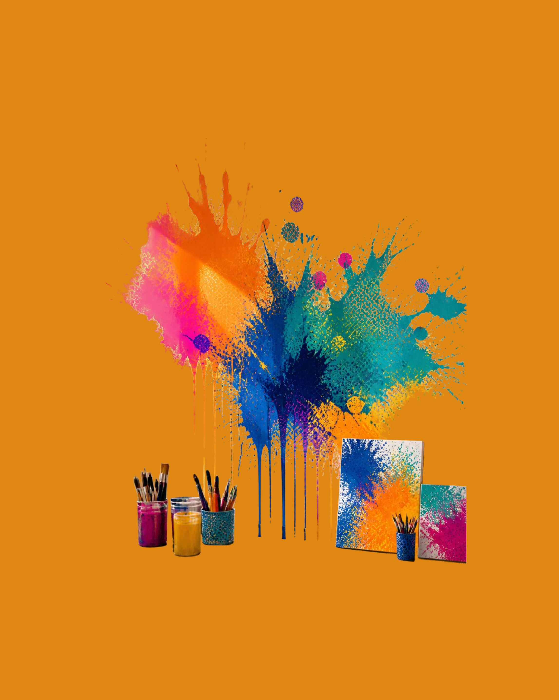
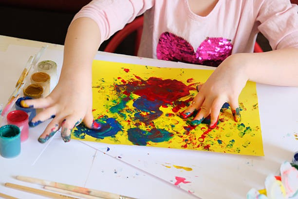
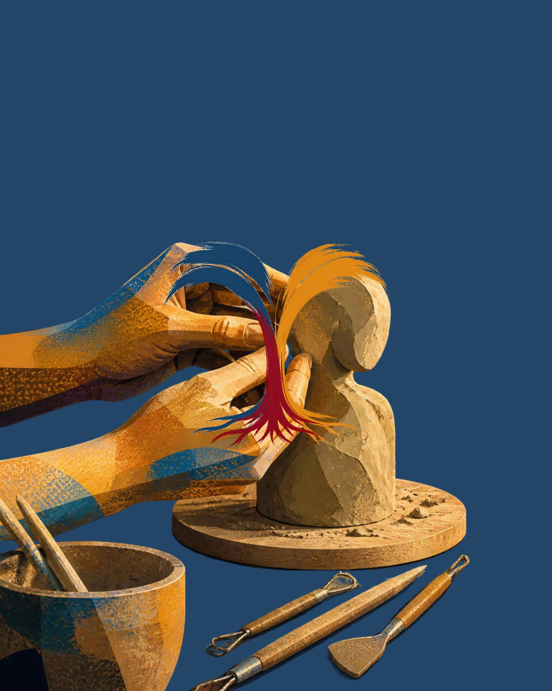

Your markhas meaning.
A warm, professional space where colour, texture and imagination become a language for what words can't always say. No artistic talent required — just you.

Where creativity meets clinical care
Art therapy uses the creative process — painting, drawing, collage, clay and mixed media — as a safe, non-verbal way to explore emotions, ease anxiety and stress, and move through life’s most profound transitions, even when words feel out of reach.
- You don't need any art skills or experience
- The process matters more than the finished piece
- Tailored to your goals, pace and comfort
- A private, non-judgemental environment
Services shaped around you
Whether you're navigating a difficult season or seeking deeper self-understanding, there's a path that fits.
Individual Sessions
One-to-one art therapy for adults and the elderly exploring anxiety, stress, grief, trauma and life transitions.
Learn more →Children & Teens
Gentle, play-based creative support that helps young people express big feelings safely.
Learn more →Palliative Care & Legacy
Tailored sessions for people facing life-limiting illness, with legacy work and support for their families and caregivers.
Learn more →Groups & Retreats
Creative workshops for schools, care facilities and communities that build connection and wellbeing.
Learn more →Four simple steps to begin
Reach out
Send a booking request. We'll arrange a short, no-pressure introduction.
Get acquainted
We talk about what brings you here, your hopes and what feels comfortable.
Create together
Guided creative sessions that open space for insight, calm and clarity.
Grow & reflect
We reflect on what emerges and build tools you can carry into daily life.



A creative sanctuary, wherever it is needed
From the quiet of a private practice to the active pulse of schools, care facilities and immersive retreats, art therapy offers a safe, non-verbal space to navigate anxiety, stress and life’s most profound transitions — for children, adults and the elderly.
Resilience & legacy work
Tailored methods and materials ensure every person, whatever their physical or cognitive state, can “make their mark”.
A circle of care
Support extends to the families, caregivers and healthcare workers who walk alongside each individual.
A visual language of hope
Difficult times and events are transformed into imagery that honours every story.
Good to know
Not at all. Art therapy is about the process of expression, not the quality of the result. No experience is needed.
We'll chat about what brings you, your goals and any questions you have, and gently introduce some creative materials at your own pace.
Yes. Sessions and artwork are private and handled according to professional ethical guidelines. Your artwork is never shared without your explicit consent.
Dr Madri runs a mobile practice with sessional rooms on the North Coast in Ballito, KwaDukuza/Stanger and Mtunzini, and also works within schools, care facilities and retreats.
Ready to make your mark?
Take the first step. Send a booking request and Dr Madri will be in touch to arrange your session.
Book your session →